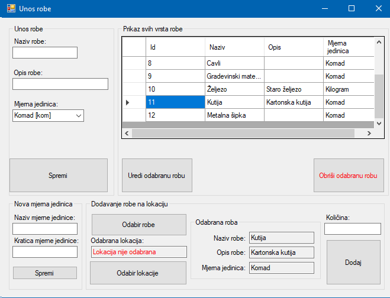

Ovaj prozor se koristi za unos robe na skladište. Pod opcijom "Unos robe" se unosi naziv robe, opis robe i mjerna jedinica. Ukoliko potrebna mjerna jedinica ne postoji moguće ju je dodati unosom nove mjerne jedinice pod opcijom "Nova mjerna jedinica". Za unos nove mjerne jedinice potrebno je unijeti naziv mjerne jedinice i kraticu mjerne jedinice. Prozor za izbor mjerne jedinice se automatski osvježava nakon dodavanje nove mjerne jedinice tako da sadrži i novu mjernu jedinicu.
"Prikaz svih vrsta robe" prikazuje sve vrste robe koje je moguće unijeti u skladište. Po potrebni moguće urediti odabranu robu što otvara novi prozor i obrisati odabranu robu (ako nije unesena na ni jednu lokaciju).
Opcija "Dodavanje robe na lokaciju" se koristi za dodavanje odabrane robe na lokaciju tj. u skladište. Roba se može odabrati pritiskom na jednu od roba u "Prikaz svih vrsta robe" ili tipkom "Odabir robe" koja otvara novi prozor i omogućuje pretraživanje robe. Detalji odabrane robe su prikazani pod opcijom "Odabrana roba". Kako bi se roba dodala u skladište potrebno je odabrati lokaciju. Klikom na "Odabir lokacije" otvara se novi prozor u kojemu je potrebno odabrati lokaciju na koju želimo dodati robu. Kad smo odabrali robu i lokaciju zadnje što je potrebno je unijeti količinu robe koja se dodaje na tu lokaciju i potom pritisnuti tipku "Dodaj".
